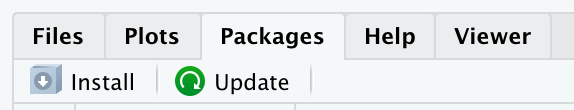

Installer R et RStudio
Nous utiliserons le langage de programmation libre-accès R et l’environnement de développement intégré RStudio comme porte d’accès à R.
Installer R
Pour commencer, on installe la dernière version de R (la machine qui fait les calculs), actuellement 4.3.1 (Beagle Scouts).
- Allez sur le site du Comprehensive R Archive Network (CRAN): https://cran.r-project.org/
- Cliquez sur “Download R for
XXX”, oùXXXest Mac ou Windows:
Si vous utilisez macOS, faites défiler le menu jusqu’au premier fichier .pkg de la liste et téléchargez-le.
Si vous utilisez Windows, choisissez “base” (ou cliquez sur l’hyperlien en gras “install R for the first time”) et téléchargez le programme.

- Double cliquez sur le fichier de téléchargement. Approuvez toutes les requêtes, comme pour n’importe quel autre programme.
4a. Si vous utilisez macOS, téléchargez et installez XQuartz.
4b. Si vous utilisez Windows, téléchargez et installez Rtools
Installer RStudio
Une fois R installée, nous installerons une interface utilisateur graphique, RStudio, pour interagir avec R.
- Naviguez jusqu’à la section de téléchargements gratuits du site de RStudio: https://www.rstudio.com/products/rstudio/download/#download
- Le site internet devrait automatiquement détecter votre système d’exploitation (Linux, macOS ou Windows). Cliquez sur le bouton pour lancer le téléchargement:

Sinon, naviguez vers le tableau et choisissez la version de RStudion adéquate.
- Double-cliquez sur le fichier de téléchargement (potentiellement caché dans votre dossier de Téléchargements). Installez comme n’importe lequel autre logiciel.
Double-cliquez sur l’icône RStudio pour lancer l’application.
Installer tidyverse
Les paquets R sont faciles à installer avec l’interface graphique. Sélectionnez le panneau “packages”, cliquez sur “Install,” tapez le nom du paquet que vous voulez installer et appuyer sur la touche Retour.

Le paquet tidyverse est une collection d’une douzaine de paquets (incluant ggplot2 et dplyr) qui fonctionnent ensemble selon une syntaxe commune. L’installer (ou charger le paquet) inclura automatiquement toutes les dépendances associées

Notez que RStudio génère le code R pour l’installation: install.packages("tidyverse"). Vous pourriez utiliser directement cette fonction et faire copier-coller dans la console pour installer les paquets du tidyverse.
Installer tinytex
Quand vous créez un fichier Rmarkdown (.Rmd) ou Quarto (.qmd) pour créer un document reproductible qui inclut calculs et texte et que vous tricotez ce dernier en PDF, R utilise le programme de typographie scientifique LaTeX. L’installation la plus aisée pour ce dernier, si votre machine n’a pas déjà de suite LaTeX, est d’installer le paquet tinytex pour obtenir une version minimale qui prend moins d’espace.
Pour installer tinytex:
- Utilisez l’onglet Packages dans le panneau RStudio pour installer
tinytex, comme n’importe quel autre paquet. Sinon, tapezinstall.packages("tinytex")dans la console. - Exécutez
tinytex::install_tinytex()dans la console. - Attendez que le téléchargement soit complété. Vous devriez ensuite être en mesure de tricoter des documents PDF.